AUMENTO DEL
NIVEL DEL MAR
Por qué sucede, en qué nos afecta y qué podemos hacer.
- Omar Ernesto Rivera Hernández
- Joseph Jeremy Gonzales Hernández
- Gerardo José Gimenez Sosa
- Camila Celeste Fabián Echegoyen
- Jonathan David Vazques Flores
Usa las flechas ← → o desplaza para navegar
ATENCIÓN
Esto no es un escenario futuro. Ya pasó, y pasó aquí.
Subida del nivel del mar
Después de ver esto, ¿qué fue lo primero que pensaron?
2 a 3 participaciones
¿Creen que esto
solo pasa lejos?
España. Mar del Plata. Las costas argentinas.
No se vayan tan lejos.
Esto no pasó
hace veinte años
Hace apenas dos meses
- Oleaje extremo
- Infraestructura frágil
- Casas y negocios dañados
Cinco años de avisos
Episodios documentados de oleaje extremo
Siempre lo mismo,
cada vez más seguido
Acajutla · 2021
Inundadas y dañadas
El muelle · 2023
Cerrado tras el oleaje
Negocios · 2025
Daños y personas lesionadas
No es solo el mar
Cada vez más frecuente
Construida sin margen
Casas, negocios, muelle
El mar no necesita subir mucho para alcanzar lo que construimos cerca.
INTERÉS
¿Por qué sube el mar? La física detrás de lo que acabamos de ver.
¿Qué es el
nivel del mar?
La altura promedio de los océanos del mundo.
- No es una línea quieta
- Se promedia sobre mareas y oleaje
- Sube de forma constante desde hace un siglo
¿Cómo lo sabemos?
Mareógrafos
Altimetría satelital
Dos métodos independientes · una misma señal
Sube, pero no en línea recta
Esquema conceptual · ilustra la diferencia entre fluctuación y tendencia
El agua se expande
al calentarse
Ley de la expansión térmica: al calentarse, el agua ocupa más espacio.
El mar sube sin que se añada una sola gota nueva.
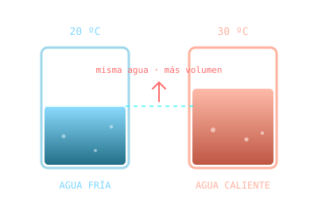
El termostato
del planeta
- Regula el clima de toda la Tierra
- Absorbe la mayor parte del calor extra
- Su temperatura mide la salud del planeta
No todo el hielo cuenta igual
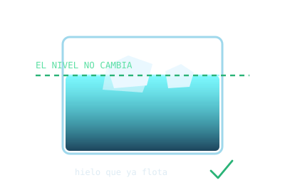
Hielo flotante
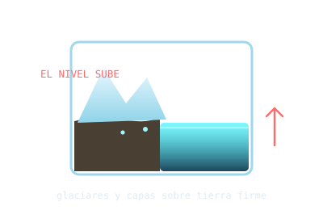
Hielo sobre tierra
Este es el problema principal
Agua que estaba
en tierra firme
Glaciares de montaña y capas polares transfieren al océano agua que antes estaba almacenada sobre el continente.
Cada vez más rápido
Siglo XX · por año
Última década · por año
2024 · récord medido
El Niño y La Niña
Las variaciones climáticas naturales también mueven el nivel del mar, hacia arriba y hacia abajo.
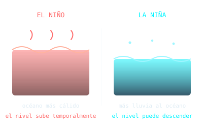
Temporal · no cambia la tendencia de fondo
Peligro de inundación
costera: alto
Según la información disponible, se espera que en los próximos 10 años se produzcan olas potencialmente dañinas que inunden la costa al menos en una ocasión.
DESEO
¿En qué nos afecta? Cada año, en nuestro propio país, muchas personas ya lo viven.
Que el agua entre “un poco más” no suena serio.
Hasta que se ve hasta dónde llega.
Más inundaciones
en la costa
Cuando el mar parte de un nivel más alto, las mareas y marejadas llegan más lejos y más rápido.
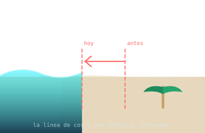
Pérdida de playa
y erosión
El oleaje consume arena en cada marea extraordinaria. Con el tiempo, eso modifica la línea de costa.
Nos obliga a retroceder.
¿Qué creen que pasa cuando una playa turística empieza a perder varios metros de playa?
2 a 3 participaciones
Costa de La Libertad
y Playa El Pimental
En 2024, proyecciones basadas en mapas de Climate Central identificaron estas zonas entre las más vulnerables a inundaciones y mareas extraordinarias.
Proyecciones Climate Central · 2024
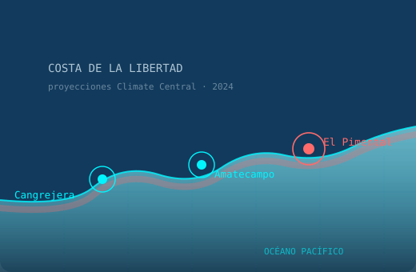
No es un hundimiento,
es un retroceso
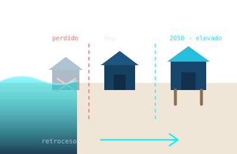
- Se pierde primero la primera línea
- La línea de construcción retrocede con la playa
- Las zonas bajas se adaptan poco a poco
- No toda la costa queda sumergida de golpe
Proteger · adaptar · retirarse
Proteger
Adaptar
Retirarse
Proteger no es para siempre
Daños a casas
e infraestructura
La línea de construcción debería estar a varios metros de la costa. Al poblar las playas, eso no siempre se respetó.
La ribera de mar de uso público
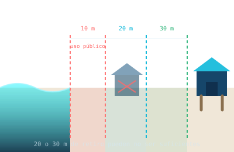
Desde la línea de alta marea
Pueden ser insuficientes
- Nunca puede ser propiedad privada
- No se puede construir libremente en ella
- Pero 10 m no es el límite seguro
El mar está más caliente
2019
2024
Media de referencia 29 ºC · mar salvadoreño 2019–2024
Menos peces,
menos ingreso
- Desplazamiento de especies
- Destrucción de hábitats
- Pérdidas económicas
- Inseguridad alimentaria
- Salud mental de pescadores artesanales
Pérdidas y daños
Afectaciones directas o indirectas sobre un sector de la población
Y tierra adentro,
el campo
Olas de calor, sequías prolongadas y fenómenos extremos golpean a los cultivos y a quienes viven de ellos.
Datos divulgados por la Organización Meteorológica Mundial (OMM)
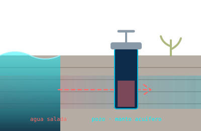
Agua salada donde
no debería estar
- Pozos de agua potable
- Manto acuífero
- Terrenos agrícolas
- Cadena alimentaria
No es que haya más agua: es todo lo que esa agua alcanza.
ACCIÓN
¿Qué podemos hacer al respecto? Empezando por mirarnos a nosotros.
Reglas ya hay
Ley de Medio Ambiente
Marco nacional
Áreas Naturales Protegidas
Conservación costera
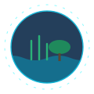
Convención Ramsar
Humedales
Compromisos climáticos
NDC 2022
Pero seamos francos: la contaminación ya alcanzó una escala difícil de controlar.
¿Quién de aquí
no ha usado plástico?
Bolsas, botellas, juguetes, objetos personales. Para nosotros ya es lo más común del mundo.
El combustible fósil
Igual de cotidiano, igual de invisible, y detrás del calentamiento que hace subir el mar.
Lo cotidiano deja de verse.
Lo que sí está
en nuestras manos
Reducir el plástico de un solo uso
Bajar el consumo de combustible
Informarnos y exigir planificación costera
Construir contando
con el agua
Restaurar manglares
Palafitos
Casas flotantes
Arrastra para ver la pérdida
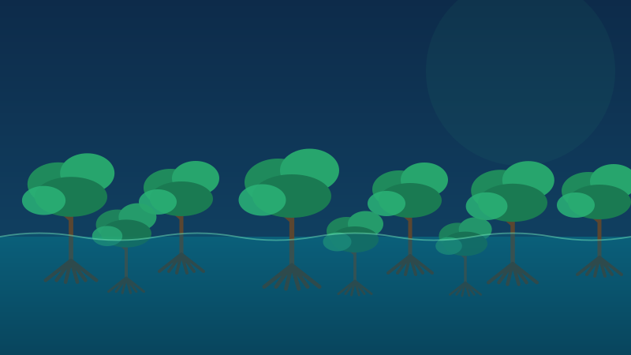
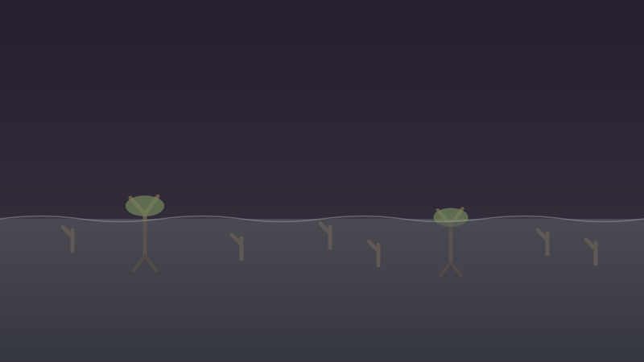
El manglar disipa el oleaje antes de que llegue a la costa
¿Verdadero o falso?
El mar no va a esperar a que estemos listos.
2021 · 2023 · 2025 · 2026
Calor y deshielo
Cómo construimos y qué consumimos
Gracias por su atención.